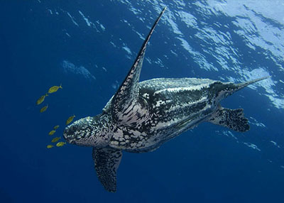

Turtle Categories
Turtle Categories

The Green turtle (Chelonia mydas) is the most frequent turtle found in Sri Lanka and one of the largest marine turtles known. It is distinguished by its flattened body covered by a tear-shaped blackish grey shell, and a pair of huge paddle-like flippers. Adult turtles are relatively large, averaging between 68 and 190 kg, with some species weighing up to 315 kg. Its name comes from the green fat found in the layers beneath its shell.Kosgoda Beaches' attract Green Sea turtles. They live mostly in tropical ocean waters, eating solely on marine vegetation such as algae and sea grass before returning to the land to lay eggs.

The Leatherback Sea turtle is the largest extant turtle and fourth heaviest contemporary reptile, with an enormous grayish-black teardrop-shaped body coated in skin and greasy flesh, seven noticeable ridges, and hydrodynamic body structure. It can grow to be seven feet long and weigh more than 2000 pounds. Hikkaduwa's beaches attract Leatherback Sea turtle.
Loggerhead Sea Turtle is a large turtle with heart-shaped shell. Loggerhead Sea turtles are carnivores that feed on marine invertebrates and have a lifespan of 50 years. Rekawa's beaches attract Loggerhead sea turtles.
Turtle Types in Sri Lanka |
Green Sea Turtle |
Leatherback Turtle |
Loggerhead Turtle |

|
 |

|
|
| Food | Feeds only on marine vegetation such as algae and sea grass. | Mainly feeds on Jelly fish and other small sea animals. | Being carnivores it feeds mainly on marine invertebrates, especially hard shelled crustaceans. |
| habitat | Commonly found in Kosgoda and southern beaches of Sri Lanka. | Found in Hikkaduwa and Southern beaches. | Commonly found in Rekawa's beaches in Sri Lanka. |
| Fun Facts | You'd imagine the animal had a green shell and body, right? But, contrary to popular belief, it is not the case. The real reason for its name is significantly more colorful. | Their vast distribution and ability to endure cold water are owing to thermoregulatory adaptations (known as gigantothermy) that allow them to keep their core body temperature stable. | It was once heavily hunted, both for its meat and for its eggs. Fortunately, various legislation has succeeded in significantly limiting this practice throughout the majority of its area. |
| Indeed, sea turtles have been categorized as endangered species due to various factors, including human interaction and activities. | |||